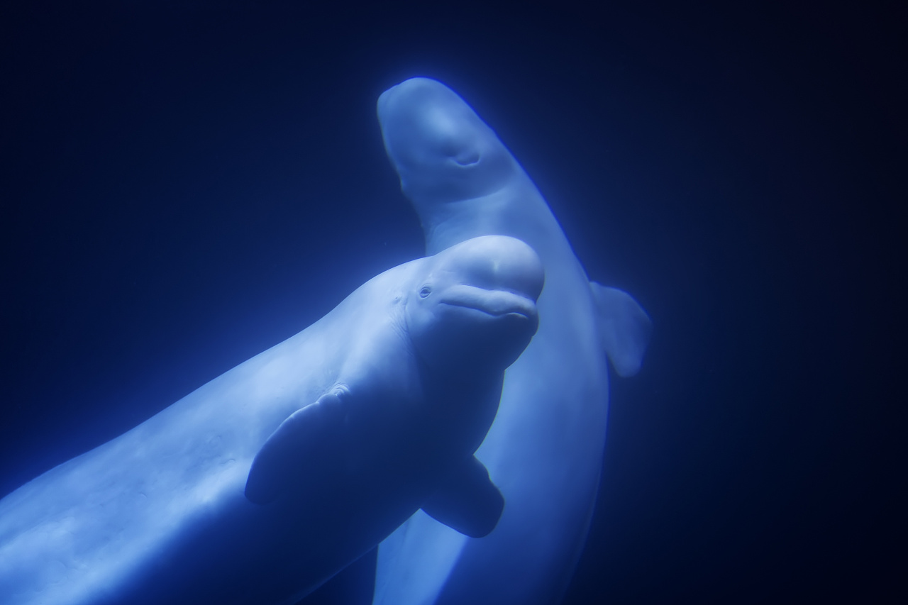

- 

海洋は生命の起源であり、海洋には約20万種以上の生物が生息しており、その内訳は動物が約18万種、植物が2万種以上である。 動物のなかでも魚類は250万種にのぼり、200種以上の魚が人間の食用に供されている。海洋は人類にグリーンエネルギーを供給することができる。 潮汐エネルギー、波エネルギー、温度差エネルギー、塩分差エネルギー、海流エネルギー、潮流エネルギーなど、海洋エネルギー資源の潜在力は非常に大きい。 アメリカの学者の試算によると、世界の海洋エネルギーの理論埋蔵量は1500×108kWを超え、開発・利用可能なのは73.8×108kWで、そのうち波浪エネルギーが27×108kW、温度差エネルギーが20×108kW、塩分差エネルギーが26×108kW、海流エネルギーが0.5×108kW、潮流エネルギーが0.3×108kWである。 海洋は水運の重要な通路である。 国際海上貨物輸送には、低速でリスクが高いという欠点があるが、通過能力が大きく、容積が大きく、運賃が安く、商品への適応性が高いため、国際貿易の主要輸送手段となっている。